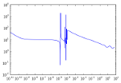
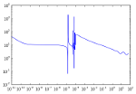

PyNE: The Nuclear Engineering Toolkit¶
 

PyNE, or Python for Nuclear Engineering, is a suite of tools to aid in computational nuclear science & engineering. PyNE seeks to provide native implementations of common nuclear algorithms, as well as Python bindings and I/O support for other industry standard nuclear codes.
Please email us at pyne-users@googlegroups.com if you have any questions on how to use or install PyNE.
Note that PyNE development is a continuing effort and we are always looking for more developers, testers, and users. If you are interested in being involved with this project, please contact us via pyne-dev@googlegroups.com, or github.
The source code for PyNE may be found at the GitHub project site. For a quick install from source, please clone from the official repo:
git clone git://github.com/pyne/pyne.git
cd pyne/
python setup.py install --user
scripts/nuc_data_make
RPSD Tutorial Session: